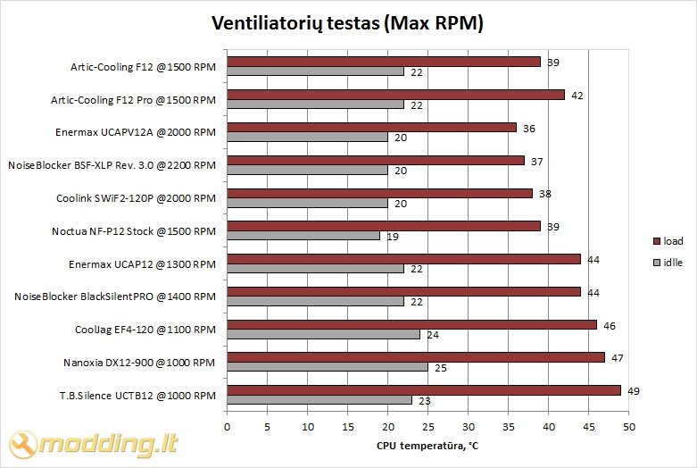

Artic-Cooling ventiliatorių F12 ir F12 Pro apžvalga

Artic-Cooling produktai nuo seno išsiskyrė savo dizainu, darbinėmis charakteristikoms bei nedidelėmis, kiekvienam naudotojui prieinamomis, kainomis. Artic F12 ir F12 Pro - tai ventiliatoriai iš naujausios kompanijos gaminamų ventiliatorių serijos. Pasak gamintojų, Artic F serijos ventiliatoriai yra daug tylesni už savo pirmtakus ir geriau aušina PC komponentus bei kelia mažesnes vibracijas.
ArticCooling F12
Artic F serijos ventiliatoriai yra gaminami trijų standartinių (80, 92 ir 120 mm) dydžių, todėl turėtų tikti kiekviename korpuse. F12 ventiliatorius (kaip ir visi kiti šios serijos propeleriai) yra supakuotas dailioje popierinėje dėžutėje. Ant jos pateikta visa būtiniausiai techninė informacija, bei kompanijos rekvizitai. Ventiliatorius yra komplektuojamas su 4 standartiniais savisriegiais montavimo varžteliais ir ArticCooling korpuso lipduku (angl. case badge).
Išskirtinė šio ventiliatoriaus savybė yra ta, kad jo rotoriuje yra sumontuotos 9 mentelės. Tai, gamintojų teigimu, padidina ventiliatoriaus kuriamo oro srautą net 20 %, lyginant su standartiniu 7 menčių ventiliatoriumi. Viskuo kitu ventiliatorius yra identiškai standartiniam 120 mm ventiliatoriui, todėl jį galima montuoti visur ir visaip. Dėl savo "standartiškumo" ventiliatorius puikia tinka CPU aušintuvams.
ArticCooling F12 Pro
Artic F Pro serijos ventiliatoriai taip pat yra gaminami trijų standartinių (80, 92 ir 120 mm) dydžių. F12 Pro taip pat yra supakuotas dailioje popierinėje dėžutėje. Ant jos - visi techniniai aušintuvo parametrai, naudojamų technologijų aprašai ir gamintojo rekvizitai. Ventiliatorius yra komplektuojamas su 4 standartiniais savisriegiais montavimo varžteliais ir ArticCooling korpuso lipduku (angl. case badge).
Artic F12 Pro atrodo tikrai išskirtinai. Ventiliatoriaus korpusas yra sudarytas tarsi iš dviejų dalių: iš plastikinio rėmelio, tvirtinamo prie korpuso sienelės, ir iš rėmelio, laikančio ventiliatoriaus statorių. Rėmeliai tarpusavyje yra sutvirtinti guminiais "varžtais" ir guminėmis plokštelėmis. Tai turėtų sumažinti ventiliatoriaus į korpusą perduodamas vibracijas ir užtikrinti tylesnį ventiliatoriaus veikimą.
Dėl savo konstrukcinės ypatybės F12 Pro gali būti montuojamas tik prie kompiuterio korpuso sienelės. Iš principo ventiliatorius gali tik traukti orą iš korpuso ir pūsti jį lauk, nes kitaip sumontuoti ventiliatorių yra praktiškai neįmanoma.
Norint montuoti F12 Pro ant CPU radiatoriaus, gali tekti gerai pasukti galvą ir pasitelkti visus praktinius įgūdžius. Ant mano naudojamo Noctua NH-C12P radiatoriaus F12 Pro man teko pritvirtinti viela.
Aušintuvų techniniai parametrai
Artic-Cooling ventiliatorių F12 ir F12 Pro techniniai parametrai yra pateikiami lentelėje:
| Modelis | Artic F12 | Artic F12 Pro |
| Sukimosi greitis, min-1 | 1350 | 1500 |
| Didžiausias oro srautas, m3/h | 96,8 | 96,8 |
| Galia, W | 1,8 | 1,8 |
| Darbo įtampa, V | 12 | 12 |
| Srovė, A | 0,15 | 0,15 |
| Triukšmo lygis, Sone | 0,5 | 0,5 |
| Triukšmo lygis, dB/A | 24,4 |
24,4 |
| Svoris, g | 108 | 140 |
Verta paminėti, kad gamintojas ventiliatorių triukšmo lygį pateikia tik Sone matavimo vienetais. Sonas - tai sudėtinio garso garsumo sąlyginis vienetas lygus 1000 Hz dažnio grynojo tono, kurio garsumo lygis 40 fonų, garsumui [1]. Norint garsumo lygį paversti įprastesniu ir dažniau kitų ventiliatorių gamintojų naudojamu triukšmingumo lygio vienetu dB/A, buvo pasinaudota [2] pateikta lentele. Gaila, bet šie skaičiai yra tik apytiksliai, nes dėl skirtingos matavimo vienetų fizikinės prasmės jų tiesioginė sąsaja neegzistuoja ir tikslus konvertavimas iš vieno matavimo vieneto į kitą yra negalimas.
Testavimas
Štai mano PC konfigūracija:
- Mainboard - MSI 770-C45
- CPU - AMD ATHLON II X2 250 AM3
- CPU Cooler - Noctua NH-C12P
- RAM - Kingston 4GB 1333MHZ DDR3
- HDD - WD 320 GB 7200rpm + 500 GB 7200rpm SATA
- GPU - MSI HD 5450 PCIE 1GB GDDR3
- DVD+/-RW - LG DVDRW 22X SATA
- PSU - Cougar S 700
- CASE: Fractal Design Define R3
Idle: Kompiuteris, dirbantis „tuščia eiga“, buvo paliekamas geram pusvalandžiui. Šio režimo metu veikė tik kasdieninės programos, nebuvo veikiama nieko ypatingo.
Load: Kompiuteris maždaug 1,5 val. buvo kankinamas "S and M Stres Tests" sintetiniais testais. Programa buvo nustatyta tik CPU testavimui. Pasirinktas ilgas testavimo laikas ir aukšta procesoriaus apkrova, imituojanti žaidimų žaidimą ar darbą su 3D grafika. Analogiškas testas buvo atliekamas su kiekvienu teste dalyvavusiu ventiliatoriumi.
Testuose palygintos CPU temperatūros, aušinant CPU radiatorių skirtingais ventiliatoriais. Ventiliatoriai buvo testuojami du kartus: pirmą kartą ventiliatoriui sukantis 1000 RPM (ventiliatoriaus greitis buvo rankiniu būdu nustatomas naudojant Nanoxia FCX Fan Controller), antrą kartą - maksimaliu greičiu. Visi testai buvo atliekami esant 20 °C aplinkos temperatūrai. Kompiuterio korpuso galinėje ir priekinėse sienelėse buvo sumontuoti Fractal Design Silent Series 120mm, o korpuso stoge - Nanoxia DX14-700 140 mm ventiliatoriai. Testų metu buvo įjungtas tik priekinėje sienelėje sumontuotas ventiliatorius. Ventiliatorius sukosi 1000 RPM greičiu.

Artic F12 ir F12 Pro ventiliatoriai testuose pasirodė tikrai neblogai: aušinimo efektyvumu jie beveik nenusileido brangesniems konkurentams. kai kuriuose netgi aplenkė keliais laipsniais. Gaila, bet AC ventiliatoriai yra gan garsūs. Net ventiliatoriams sukantis 1000 aps/min greičiu, jie, o ypač F12 Pro, buvo garsesni už Noctua NH-C12P aušintuvą. Tai vienas didesnių šių aušintuvų trūkumų.
Išvados ir pasiūlymai
Pliusai:
- neblogai aušina
- ilgaamžiai guoliai
- ventiliatoriai gaminami trijų standartinių (80, 92 ir 120 mm) dydžių
- kaina (tiek F12, tiek F12 Pro - apie 20 Lt)
- gan garsūs
- nestandartinis F12 Pro montavimo būdas - ventiliatorius netinka montuoti ant CPU radiatorių
 Artic-Cooling F12 serijos ventiliatoriai - tai gan nebloga alternatyva standartiniams PC korpuso ventiliatoriams. Ventiliatorių koziris - jų kaina. Tai tikrai pigūs ventiliatoriai, kurie testuose pasirodė išties neblogai. Aušinimo efektyvumu jie beveik
nenusileido brangesniems konkurentams, kai kuriuose netgi aplenkė
keliais laipsniais. Gaila, tačiau šie ventiliatoriai , o ypač F12 Pro, yra gan garsūs (garsesni nei Noctua NH-C12P, Nanoxia DX900 ir pan.). Tai vienas didesnių šių aušintuvų trūkumų. Kitas F12 Pro trūkumas yra jo konstrukcija. Dėl savo konstrukcinės ypatybės F12 Pro gali būti montuojamas tik prie
kompiuterio korpuso sienelės. Iš principo ventiliatorius gali tik
traukti orą iš korpuso ir pūsti jį lauk, nes kitaip sumontuoti
ventiliatorių yra praktiškai neįmanoma.
Artic-Cooling F12 serijos ventiliatoriai - tai gan nebloga alternatyva standartiniams PC korpuso ventiliatoriams. Ventiliatorių koziris - jų kaina. Tai tikrai pigūs ventiliatoriai, kurie testuose pasirodė išties neblogai. Aušinimo efektyvumu jie beveik
nenusileido brangesniems konkurentams, kai kuriuose netgi aplenkė
keliais laipsniais. Gaila, tačiau šie ventiliatoriai , o ypač F12 Pro, yra gan garsūs (garsesni nei Noctua NH-C12P, Nanoxia DX900 ir pan.). Tai vienas didesnių šių aušintuvų trūkumų. Kitas F12 Pro trūkumas yra jo konstrukcija. Dėl savo konstrukcinės ypatybės F12 Pro gali būti montuojamas tik prie
kompiuterio korpuso sienelės. Iš principo ventiliatorius gali tik
traukti orą iš korpuso ir pūsti jį lauk, nes kitaip sumontuoti
ventiliatorių yra praktiškai neįmanoma.
Summa summarius,
Artic-Cooling F12 serijos aušintuvams suteikiu
4 modding.lt rakčiukus bei
modding.lt rekomenduoja įvertinimą.
Artic Cooling F12 Pro Skytech salonuose kainuoja
16.49 Lt.
Modding.lt komanda dėkoja Timothy Yun iš www.arctic.ac už apžvalgai suteiktą produktą.
Jei norėsite pakomentuoti mano straipsnį arba pareikšti savo nuomonę, apsilankykite Modding.lt forume.


{kind=link}
{kind=link}
{kind=link}
{kind=link}
{kind=link}
{kind=link}
{kind=link}
{kind=link}
{kind=link}
{kind=link}
{kind=link}
{kind=link}
{kind=link}
{kind=link}
{kind=link}
{kind=link}
{kind=link}
{kind=link}